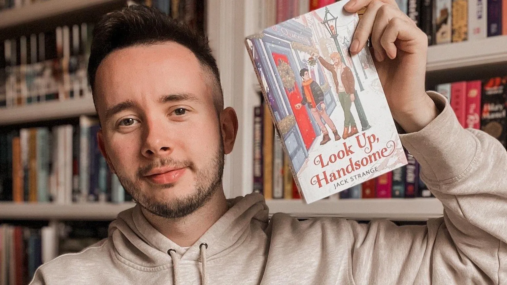

Forfattere protesterer mot Meta: "Vi må si ifra"
Forfattere over hele verden protesterer mot Meta etter avsløringer om at selskapet har brukt deres verk til å trene kunstig intelligens (AI).
Jack Strange
En drøm som ble virkelighet - og et mareritt
Jack Strange fikk sitt store gjennombrudd i fjor da han landet en etterlengtet bokavtale. "Det var utrolig. Jeg hadde fått så mange avslag underveis," forteller han. "Så da noen endelig sa ja, gråt jeg. Det var alt jeg noensinne hadde ønsket meg."
Før Jack publiserte debutromanen Look Up, Handsome, hadde han selvpublisert flere titler. Men han opplevde en helt annen følelse da han fant ut at disse bøkene var tilgjengelige på LibGen - et såkalt "skyggebibliotek" med millioner av bøker og akademiske artikler hentet uten tillatelse.
En etterforskning utført av magasinet The Atlantic avslørte at Meta kan ha benyttet seg av millioner av piratkopierte bøker og forskningsartikler via LibGen (Library Genesis) for å trene sitt generative AI-system, Llama.
Nå organiserer forfattergrupper i Storbritannia og verden over kampanjer for å få myndighetene til å gripe inn.
Meta forsvarer seg
Meta, som eier Facebook, Instagram og WhatsApp, er for tiden i en rettslig strid med flere forfattere over bruken av deres verk.
Llama er en stor språkmodell (LLM) lik OpenAIs ChatGPT og Googles Gemini. Disse systemene mates med enorme mengder data og trenes til å identifisere mønstre, noe som lar dem generere tekst basert på sannsynlige ordsekvenser.
Til tross for at disse systemene omtales som intelligente, hevder kritikere at de ikke "tenker", ikke forstår det de produserer, og ofte kan presentere feilaktig informasjon som fakta.
Teknologiselskaper argumenterer for at de trenger mer data for å gjøre AI-systemene mer pålitelige. Men forfattere, kunstnere og andre kreative mener at de burde få betalt for bruken av sitt arbeid.
En talsperson for Meta sier til BBC Newsbeat at selskapet har "utviklet revolusjonerende GenAI som driver utrolig innovasjon, produktivitet og kreativitet for enkeltpersoner og selskaper". De legger til at "rettferdig bruk av opphavsrettsbeskyttet materiale er avgjørende for dette", og at Meta ønsker å utvikle AI som gagner alle.
Bekymringer rundt opphavsrett og jobbtrusler
I tillegg til bekymringer rundt opphavsrett og nøyaktighet, krever AI-systemer store mengder energi, noe som skaper miljømessige utfordringer. Mange frykter også at teknologien vil true arbeidsplasser.
Jacks debutroman var ikke en del av LibGen-datasettet, men han oppdaget at noen av hans selvpubliserte bøker var blitt tatt. Han sier at han ikke ble overrasket, da mange andre forfattere har opplevd det samme. Likevel ga det ham en sterkere motivasjon til å handle.
"Man kan ikke bare trekke på skuldrene og si 'jaja'. Man må si ifra og kjempe tilbake," sier han til BBC Newsbeat.
Meta hevder at deres åpne AI-kilder, som Llama, vil "øke menneskelig produktivitet, kreativitet og livskvalitet". Men Jack mener at teknologien utgjør en reell risiko for kreative yrker.
"Det er frustrerende at de første jobbene AI tar over, er de kreative jobbene som gir folk glede. Vi har allerede lav verdi i samfunnet, og nå blir vi enda mindre verdsatt med AI," sier han.
Kampen mot et selskap verdt en billion dollar
Jack innser at det er vanskelig å kjempe mot et selskap som Meta, verdt over en billion dollar. "Hvor mye kontroll kan du ta tilbake når arbeidet ditt allerede er tatt? Hvordan kan vi leve med dette, og hvordan kan vi beskyttes mot det?"
Han er en av stadig flere forfattere som ber regjeringen gripe inn. En demonstrasjon er planlagt torsdag nær Metas kontor i London, i tillegg til protester på nettet.
Abie Longstaff, som jobber for The Society of Authors, en fagforening for forfattere, illustratører og oversettere, sier til Newsbeat at de har vært bekymret for AI i mange år.
"Vi føler alle på en slags hjelpeløshet. Men vi kjemper hardt," sier hun.
Hun forteller at hennes arbeid også har blitt brukt til AI-trening, noe hun mener kan påvirke fremtidige publiseringsmuligheter.
"Store språkmodeller fungerer ved prediksjon, ved å se etter mønstre. De vil ha våre stemmer, vår uttrykksmåte, vår stil."
"Hvem som helst kan gå inn på en AI-plattform og be den skrive en bok i min stil, med min stemme," sier hun.
Men fordi deres arbeid er blitt hentet uten tillatelse, får ikke forfatterne noen kompensasjon eller anerkjennelse.
"Vi vil ha kompensasjon, vi vil ha mer åpenhet," sier Abie. "Selskapet har tatt bøkene våre og brukt dem til å tjene penger. Det har penger, men i stedet for å betale oss for vår intellektuelle eiendom, tar det alt gratis."
Forfatterforeninger krever handling
The Society of Authors og andre fagforeninger som Writers' Guild oppfordrer nå forfattere til å kontakte sine politikere for å få temaet på agendaen.
I desember la myndighetene frem et forslag som skulle balansere opphavsrett og AI-selskapenes behov for tilgang til data. Et av forslagene var å gi teknologiselskaper automatisk tilgang til verk som bøker, filmer og TV-serier for AI-trening, med mindre skaperne aktivt meldte seg ut.
Men Abie mener dette er feil tilnærming. "Det er som å si at du må sette en lapp på lommeboken din med beskjed om at ingen skal stjele den," sier hun. "Det burde være AI-selskapene som spør oss om tillatelse."
Jack drømmer fortsatt om å være forfatter på heltid, til tross for utfordringene.
"Det er fortsatt min drøm, men det blir stadig vanskeligere med AI i bildet."